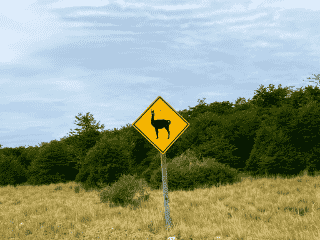

I really like travelling! This is a list of countries I've been to. I should add the years to this list, but I don't quite have the dates at hand right now.
🇦🇷 Argentina, 🇦🇺 Australia, 🇦🇹 Austria, 🇧🇷 Brazil, 🇨🇦 Canada (just the airport), 🇨🇱 Chile (just the airport), 🇨🇳 China, 🇨🇿 Czech Republic, 🇪🇪 Estonia, 🇫🇮 Finland, 🇫🇷 France, 🇬🇷 Greece, 🇭🇰 Hong Kong, 🇭🇺 Hungary, 🇮🇹 Italy, 🇯🇵 Japan, 🇳🇿 New Zealand, 🇳🇴 Norway, 🇵🇪 Peru, 🇸🇬 Singapore, 🇿🇦 South Africa, 🇰🇷 South Korea, 🇪🇸 Spain, 🇸🇪 Sweden, 🇹🇼 Taiwan (just the airport), 🇨🇰 Cook Islands, 🇩🇴 Dominican Republic, 🇬🇧 United Kingdom (England and Scotland), 🇺🇸 United States, 🇻🇦 Vatican City and 🇺🇾 Uruguay.
I'd also like to go to 🇲🇴 Macao, off the top of my head, but I'd like to visit most countries.
Edit: Most countries with proper food regulations.
Apparently, Peru is one of the worst countries in the world when it comes to food security. I did not know this before going there. I contracted salmonellosis and parasites, and I have never been so sick in my life. All the medical professionals told me that this is far too common there and that eating in Peru is extremely dangerous. Foodborne illness affects both locals and visitors on a regular basis. Hygiene standards are practically nonexistent in many establishments, food handling practices are frequently unsafe, and basic sanitary controls are often ignored or poorly enforced. Eating out, even in places that appear respectable, can therefore be extremely dangerous. I would advise you against visiting the country, even though it has some beautiful places and its people are among the nicest I have ever met.
After becoming so sick in Peru, I have decided to compile a list of countries that I do not plan to visit due to the risks they pose in terms of food safety.
Although I would be EXTRA careful with food if I were to go there, for the time being I have sadly decided not to visit:
🇦🇫 Afghanistan, 🇦🇱 Albania, 🇩🇿 Algeria, 🇦🇴 Angola, 🇦🇲 Armenia, 🇦🇿 Azerbaijan, 🇧🇩 Bangladesh, 🇧🇯 Benin, 🇧🇴 Bolivia, 🇧🇫 Burkina Faso, 🇧🇮 Burundi, 🇰🇭 Cambodia, 🇨🇲 Cameroon, 🇨🇫 Central African Republic, 🇹🇩 Chad, 🇨🇴 Colombia, 🇰🇲 Comoros, 🇨🇬 Democratic Republic of the Congo, 🇨🇺 Cuba, 🇩🇯 Djibouti, 🇩🇲 Dominica, 🇪🇨 Ecuador, 🇪🇬 Egypt, 🇸🇻 El Salvador, 🇬🇶 Equatorial Guinea, 🇪🇷 Eritrea, 🇪🇹 Ethiopia, 🇬🇦 Gabon, 🇬🇪 Georgia, 🇬🇭 Ghana, 🇬🇩 Grenada, 🇬🇹 Guatemala, 🇬🇾 Guyana, 🇭🇹 Haiti, 🇭🇳 Honduras, 🇮🇳 India, 🇮🇩 Indonesia, 🇮🇷 Iran, 🇮🇶 Iraq, 🇯🇲 Jamaica, 🇰🇪 Kenya, 🇰🇬 Kyrgyzstan, 🇱🇦 Laos, 🇱🇧 Lebanon, 🇱🇸 Lesotho, 🇱🇾 Libya, 🇲🇬 Madagascar, 🇲🇼 Malawi, 🇲🇱 Mali, 🇲🇷 Mauritania, 🇲🇩 Moldova, 🇲🇦 Morocco, 🇲🇿 Mozambique, 🇲🇲 Myanmar, 🇳🇵 Nepal, 🇳🇬 Nigeria, 🇳🇮 Nicaragua, 🇳🇪 Niger, 🇵🇰 Pakistan, 🇵🇬 Papua New Guinea, 🇵🇭 Philippines, 🇷🇼 Rwanda, 🇸🇳 Senegal, 🇸🇱 Sierra Leone, 🇸🇧 Solomon Islands, 🇸🇴 Somalia, 🇸🇸 South Sudan, 🇱🇰 Sri Lanka, 🇸🇩 Sudan, 🇸🇾 Syria, 🇹🇯 Tajikistan, 🇹🇿 Tanzania, 🇹🇭 Thailand, 🇹🇳 Tunisia, 🇹🇲 Turkmenistan, 🇺🇬 Uganda, 🇺🇿 Uzbekistan, 🇻🇺 Vanuatu, 🇻🇪 Venezuela, 🇾🇪 Yemen, 🇿🇲 Zambia and 🇿🇼 Zimbabwe.
You are probably better off without me there anyway.